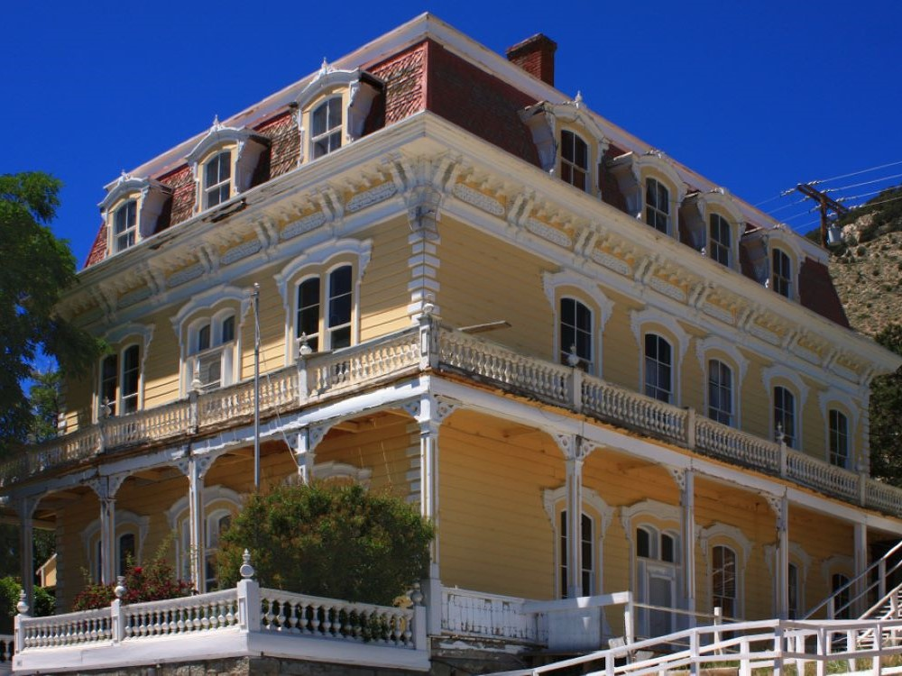
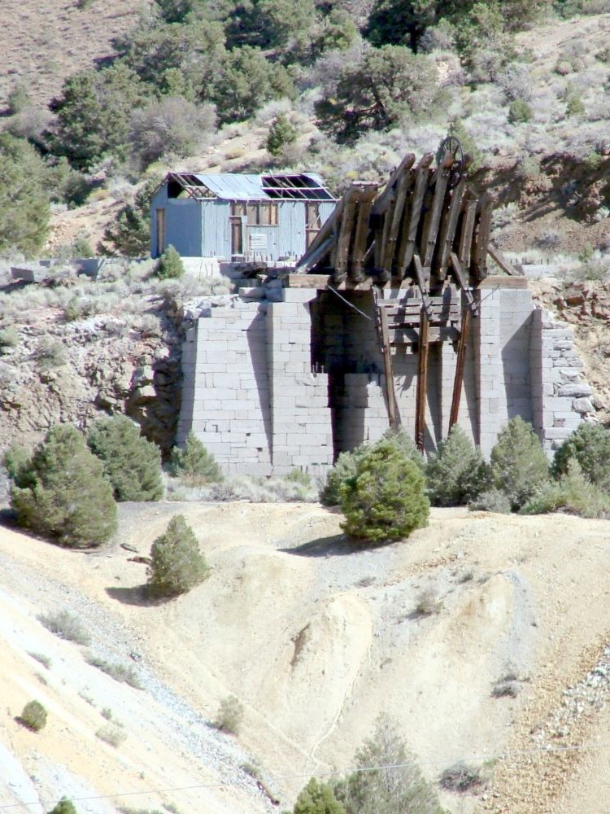

A historic mining town famed for its Old West charm, preserved buildings, and role in Nevada’s silver boom during the 19th century.
How to Get There
From Reno (25 mi): Take I‑580 south toward Carson City, then exit onto NV‑341 (Geiger Grade Road) and follow the scenic mountain road into Virginia City.
From Carson City (15 mi): Drive north on NV‑341 through Gold Hill directly into Virginia City.
Overview
Virginia City is a National Historic Landmark and one of the best-preserved mining towns in the American West, perched at about 6,200 feet on the slopes of Mount Davidson in the Virginia Range. It was the center of the Comstock Lode, the richest silver discovery in U.S. history, and today its wooden boardwalks, saloons, and mining relics make it a living piece of the Old West.
Visitors come to walk C Street with its saloons and shops, to tour old mines and museums, to ride the Virginia & Truckee Railroad, and to enjoy the views of the Washoe Valley and the Sierra Nevada. The town has fewer than a thousand year-round residents and a lively calendar of events, including the International Camel Races, and is an easy day trip from Reno, Carson City, and Lake Tahoe.
In 1859 prospectors found gold and a heavy blue-gray ore that proved to be rich in silver, in what became the Comstock Lode, named for Henry Comstock. Virginia City boomed to a population of about 25,000 in the 1870s, with mansions, opera houses, and a stock exchange, and the Big Bonanza of 1873 made fortunes for the "Silver Kings." Young writer Samuel Clemens worked at the Territorial Enterprise newspaper here and first used the pen name Mark Twain in 1863. A great fire in 1875 destroyed much of the town, which was rebuilt, but the silver declined and the population fell sharply by the early 20th century.
C Street, the main thoroughfare, is lined with raised wooden boardwalks and 19th-century saloons such as the Bucket of Blood. The Chollar Mine offers tours of an old Comstock mine, and historic landmarks include Piper’s Opera House, St. Mary’s in the Mountains church, and the grand Mackay Mansion. The Virginia & Truckee Railroad runs scenic excursions through the hills toward Gold Hill, and the view of Mount Davidson and the valley below is a highlight.
The Way It Was Museum displays mining equipment and artifacts of the Comstock era, and the Fourth Ward School Museum, in an 1876 schoolhouse, tells the story of the town’s daily life and mining heritage. The Mark Twain Museum, the Mackay Mansion, and the Territorial Enterprise offices preserve the stories of the writers and magnates who made the town famous.
Virginia City is surrounded by high desert hills with views over the Washoe Valley. Davis Creek Regional Park and Washoe Lake State Park, a short drive away, offer camping, hiking, and fishing, and the Virginia Range has trails and old mining roads to explore. Lake Tahoe is a drive of about 45 minutes.
Virginia City has a high desert climate. Summers are warm and dry, with highs in the 80s °F and cool nights, winters are cold and windy, with snow and highs in the 30s and 40s °F, and spring and fall are mild. The higher elevation makes it cooler than Reno or Carson City throughout the year.
Things to Do
Step Back into the Wild West
Virginia City is one of the most famous historic mining towns in the American West. Located in the Virginia Range southeast of Reno, the town rose to prominence during the Comstock Lode silver boom of the 1860s and today preserves much of its original character through historic buildings, wooden boardwalks, museums, and living-history attractions.
Ride the Virginia & Truckee Railroad
One of the town's signature attractions, the Virginia & Truckee Railroad offers scenic excursions through the surrounding high desert and mountain landscapes. Visitors can experience vintage rail travel while learning about the railroad's important role in Nevada's mining era.
Explore Historic C Street
Virginia City's main street is lined with restored saloons, shops, museums, restaurants, and historic landmarks. Walking along the wooden sidewalks gives visitors an authentic glimpse into what life was like during Nevada's silver mining boom.
Visit the Fourth Ward School Museum
Built in 1876, the Fourth Ward School is one of the last surviving nineteenth-century school buildings in the American West. Today it operates as a museum featuring exhibits on local history, mining, education, and daily life during the Comstock era.
Tour Historic Mines and Learn About the Comstock Lode
Virginia City's prosperity was built on the discovery of the Comstock Lode, one of the richest silver deposits in American history. Visitors can tour historic mine sites and museums to learn about mining technology, geology, and the people who helped shape Nevada's development.
Experience Ghost Tours and Historic Attractions
Virginia City is known for its well-preserved historic buildings and colorful frontier stories. Guided walking tours, ghost tours, historic cemeteries, and museums offer visitors opportunities to explore the town's unique legends and heritage.
Top Trails
Virginia City National Historic Landmark Walking Tour
Length: Approximately 1 to 2 miles
Elevation Gain: Minimal
Difficulty: Easy
This self-guided walking experience takes visitors through Virginia City's most important historic landmarks, including museums, churches, saloons, and preserved mining-era structures throughout downtown.
Ophir Grade Trail
Length: Approximately 6 miles round trip
Elevation Gain: Moderate
Difficulty: Moderate
Following part of a historic transportation route, this trail offers scenic views of the Virginia Range, surrounding valleys, and remnants of Nevada's mining history.
Flowery Peak Trail
Length: Approximately 5 miles round trip
Elevation Gain: Approximately 1,200 feet
Difficulty: Moderate
This trail climbs into the Virginia Range and rewards hikers with panoramic views of Virginia City, the Carson Valley, and the surrounding mountains and desert landscape.
Virginia Range Trail Network
Length: Various route options
Elevation Gain: Moderate
Difficulty: Easy to Moderate
The surrounding public lands contain numerous trails suitable for hiking, mountain biking, photography, wildlife viewing, and exploring Nevada's historic mining landscapes.
Sources: Virginia City Tourism Commission visitor information, including details on historic attractions, museums, C Street, ghost tours, special events, and local history.
https://visitvirginiacitynv.com/https://visitvirginiacitynv.com/
Additional information verified through Virginia & Truckee Railroad resources covering excursion trains, railroad history, scenic routes, and visitor experiences.
https://www.vtrailway.com/https://www.vtrailway.com/
Further information reviewed through Fourth Ward School Museum and Nevada historical resources covering the Comstock Lode, mining history, preservation efforts, historic landmarks, and recreational opportunities surrounding Virginia City.
https://fourthwardschool.org/https://fourthwardschool.org/
This article uses material from the Wikipedia articles and official tourism pages for the Virginia City, Virginia City, Nevada, Comstock Lode, Virginia and Truckee Railroad, which are released under the Creative Commons Attribution-Share-Alike License 3.0.
Featured Locations and Trails
The Way It Was Museum
Museum showcasing artifacts, photographs, and mining relics from the Comstock Lode era, offering a vivid portrayal of life in the historic American West.



.jpg){kind=link}